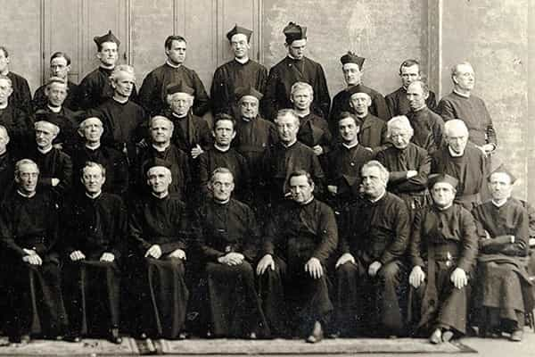
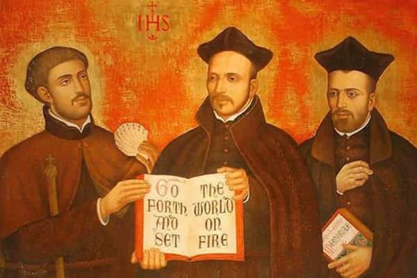

André is a young European who left his decaying country in 2012 for greener pastures. He enjoys exploring subterranean places, reading about a host of interconnected topics, and yearns for Tradition.


This piece is about an antiquated manual of how-to-take-over-when-you-are-a-minority: the allegedly Jesuit Secret Rules, written in the course of the 16th century. It is a short, highly synthetic piece, amounting to roughly 40 pages in English translation.
The “Society of Jesus” is said to have been created in 1534 by the Spanish nobleman and almost sigma male Ignatius of Loyola along with other Castilians. Acknowledged as a legitimate religious order by the Pope in 1537, the Society would not dwell much in contemplation like the other orders, but quickly went in a frenzy of creating schools, sending confessors and advisers inside all Christendom, and establishing forward posts outside of Europe. Across the centuries, many promising individuals were schooled in Jesuit establishments, and today, the order is still famous for its “social work” and high cultural level.
A Jesuit college in Czech Republic
However, Jesuits are also the most sulphurous and controversial Catholic order, apart perhaps from the Templars.
Before the end of the 16th century, they had already made themselves a reputation of cunning men who used religion as a tool and a mask for power-grabbing. Again and again, people noticed how Jesuit priests would sneak into the first circle of any wealthy or powerful figure, become confessors of kings, insist to be in charge of educating the sons of noble or rich families, distort the meaning of laws to either exonerate the obviously guilty or condemn the innocent, and so on.
Accordingly, Jesuits were expelled from many countries—where they always managed to creep back in—before being dissolved by Pope Clement XIII in 1773. Said Pope died in suspicious circumstances. The “Society of Jesus” was officially restored by another Pope in 1814, and it went back to its former place with little delay, as if it had never ceased to exist surreptitiously during more than 40 years.
Colloquial language was affected by Jesuit ways. The very word “Jesuit” has become synonymous with “unclear” or “ambiguous”, and casuistry, which referred to the official Jesuit method of settling ethical issues. Today it is still equated with a dishonest use of evidence and specious reasonings to judge anything according to one’s interests rather than in accordance to justice or truthfulness. Jesuit priests could absolve a servant who killed his master to steal from him—as long, of course, as said servant sought absolution from Jesuits and no one else—but condemn to hell anyone who dared criticize them.
Philosopher Blaise Pascal exposed them with jest in a series of texts, the Provincials Letters (1656-7). Despite what the Catholic church says today, Pascal quoted the Jesuit casuists closely, and if you are a legal practitioner you should definitely check these letters.
Just like the Jews, Jesuits benefit from a hugely positive bias from official history. All their cunning, bad reputation, and recurring troubles are conveniently swept aside in favor of a narrative that emphasize their courage, intelligence, or how they worked for a better world. Just like with the Jews, if you dare investigate, you will soon be called a “conspiracy theorist”. A deadly mixture of unquestionable intelligence, Machiavellianism, power plays, money, subversion and globalism, all hidden or trivialized by official history, is at play in both cases. Someone should write a book about Jesuitism as a group strategy.
In such circumstances, it is hardly surprising if at all that a compendium of “secret instructions” leaked. Clear, consistent, surprisingly straight to understand for an allegedly Jesuit writing—perhaps this is the strongest argument against its genuineness—the Secret Rules are of high interests to anyone who wants to understand better power relationships and intrigue.
Soon after the Rules was published, Jesuits priests rushed to argue that it had been forged by a disgruntled, revenge-seeking ex-member of their order. The Catholic Encyclopedia and Current Year Wikipedia still repeat this claim. Thus, they say, the book saw the light in 1614 in Poland, the alleged author being Polish. However, this version is undermined by the fact that another copy was found which had been published in 1596 in Venice, and said copy is still around although hidden under an esoteric Latin name. The official views constantly ignore this copy—as if the Polish guy history had been forged and the Secret Rules was genuine.
In the course of the eighteenth century, several copies of the Rules were found in various Jesuit lairs. Eventually, a nineteenth century historian would argue that the Rules “may have been issued by [Jesuit] authority” (here, p.147), and a man who had been a Jesuit himself for fourteen years wrote that the Rules were truthful (here, p.7).
Thus, while the exact authorship is uncertain, it is very much possible that the Secret Rules has been written by a Jesuit. And whoever the author, even scholars who inclined to think of the Rules as a forgery emphasized the relevance of its content. The Rules was “drafted by a shrewd and keen observer, who seeing what the Fathers did, travelled analytically backwards to find how they did it”, one said. Even “apocryphal, [the book] certainly gives a true representation of the… arts and practices of the Jesuits”, added another. This is all what matters.

Appropriately described as “a strange mixture of Machiavelli and Saint Thomas”, the Rules explain how a Jesuit should behave so that his Society grabs all the power it can.
While reading the book, I could not help but remember of Robert Greene’s 48 Laws Of Power, many of whom are clearly exemplified by the Secret Rules. Is this really the way of men or something overly dark?
Here are some of the contents of the Rules—and note that I am barely scratching the surface:
It would be advantageous, if we could cautiously and secretly foment dissentions amongst nobles and princes, even to the mutual wasting of their strength; but if they seem likely to be reconciled, the society should immediately endeavor to pacify them, lest it should be effected by some other intervention.

If you have read Greene’s 48 Laws, you will have noticed familiar themes. Power-grabbing and group strategies follow patterns. Precisely, this is where the Jesuits have in part undone themselves.
Greene’s 48th law advises to be formless. Learn to create new forms, new strategies, assume no definitive identity. If one can “reinvent” himself constantly, one can push new plans unnoticed and seem always young.
The Jesuits have transgressed this law. As Greene could say, they took a noticeable shape. The typically crooked argumentative style of casuistry, the little games around widows and noblemen, the sudden swings for or against particular individuals among the clergy, have all become quite distinctive across the centuries.
As Christianity was expelled from mainstream culture and replaced with aggressive secularism, the so-called Society of Jesus became obsolete. How could priests be at the kings’ doorsteps when there are no more kings and when the bankers took their place? For many people the Jesuits look like little more than a relic in which case the Secret Rules are an interesting historical precedent, giving a prime example of how genuine spirituality can degenerate into a crass search for wealth and power, but whose subject is now a mere shadow of its former self.
Yet Jesuits are still there. Sure, their hour of glory, if one can speak of glory at all, has ended long ago. But even then, if you look closely, you can notice an updated version of degeneration: Jesuit priests have played a key role in implementing Vatican II and have pushed “liberation theology”, which is a Christian version of the leftist craze for “emancipation”. Not to mention Francis Zero, as traditional Catholics call him, first Jesuit Pope of all history and supporter of rapefugees.
Definitely, there are many grey areas to shed light on. The good thing is that uncovering shadowy people’s plotting is not that hard. After all, they are shameless, but not that smart.
Read Next: Why Is Modern Christianity So Wimpy?